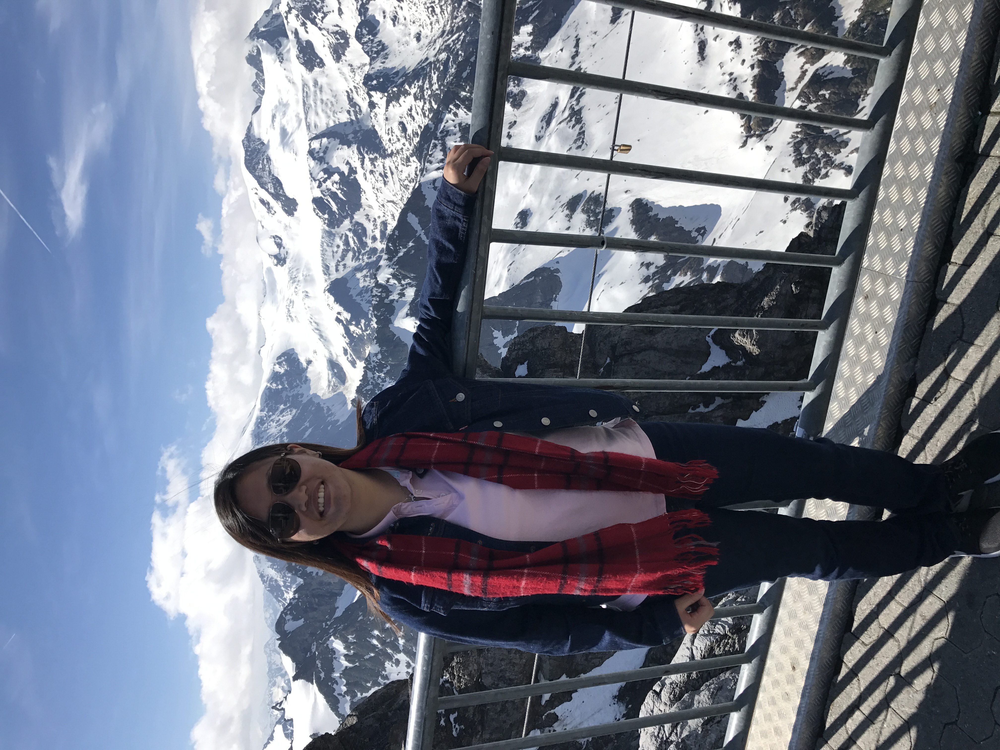
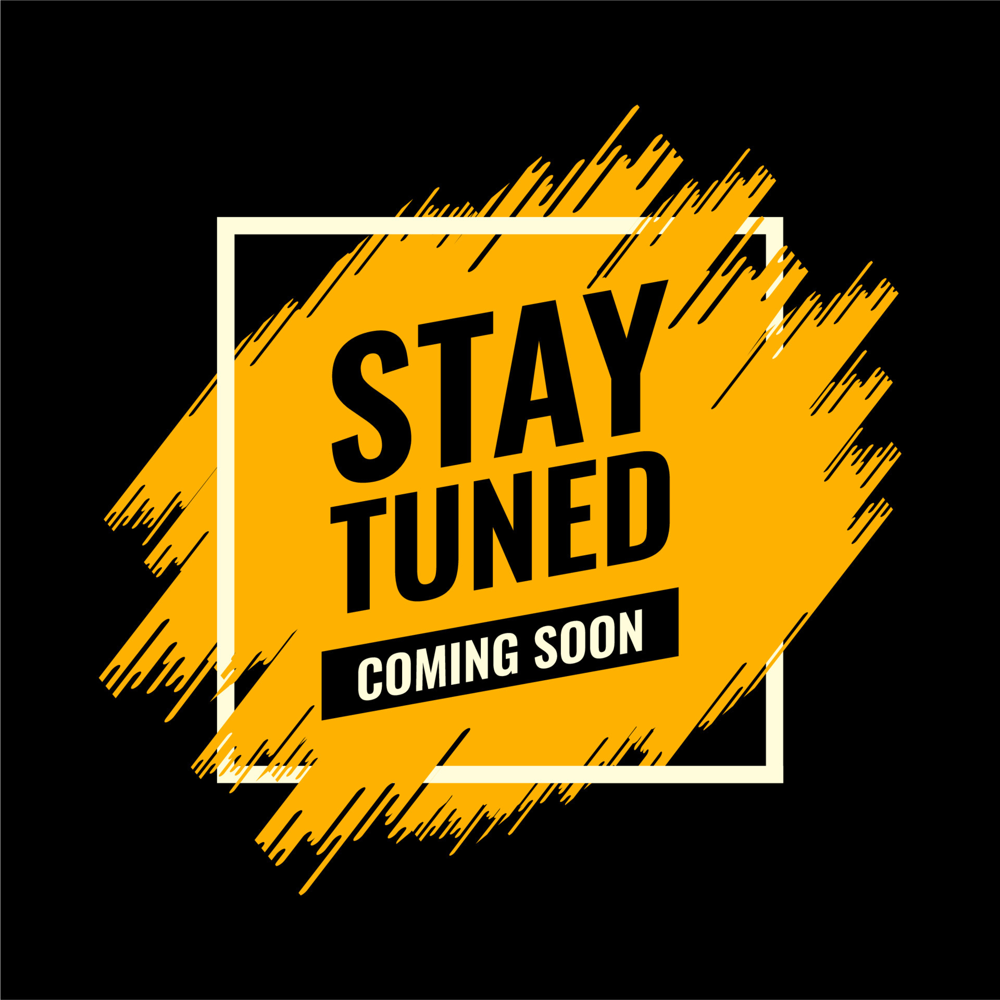

- Welcome
- About Me
- My Projects
- Contact
Greetings! I'm Ju Li
An enthusiastic individual with a deep passion for analytical thinking, process improvement, and automation. With a thirst for acquiring new skills and a love for water sports, I found myself on a transformative journey that led me to attend a coding bootcamp.
As an experienced consultant, my expertise lies in optimizing operations by meticulously identifying areas for improvement, streamlining processes, and harnessing the power of technology to increase productivity and substantial cost savings.
Thrilled by the possibilities that lie ahead, I am now ready to embark on a new and exciting adventure as a full stack developer, building upon my previous experiences and leveraging my diverse skill set to create innovative solutions.

More info about Ju Li, Chow
I'm passionate about exploring the world through swimming, traveling, scuba diving, and food hunting. I enjoy water sports, being in the water brings me a sense of peace and accomplishment.
Traveling is my ultimate source of inspiration. I've been fortunate to explore various countries and cultures, immersing myself in diverse landscapes and meeting incredible people along the way. My most recent scuba diving experience was in September 2022 in Bali, where I had the opportunity to witness breathtaking marine life and immerse myself in a world like no other.
As a dedicated food enthusiast, I'm always on the lookout for hidden gems and gastronomic delights. Exploring local street food markets or trying traditional dishes is an integral part of my travel experiences.
In a nutshell, my life revolves around my passions for swimming, traveling, scuba diving, and the joy of discovering new culinary treasures. I believe that life is about creating unforgettable memories, and I'm excited to continue my journey of exploration and adventure.


This MVP of a React full-stack app that enables the collection and recording of vital personal and work information of employees. It was designed to assist HR in reducing manual workload, avoiding the need for physical forms that need scanning or PDFs for payroll processing. This streamlines tasks, enhances information accuracy, and simplifies payroll procedures.
Showcase Github
This feature extension of a Vue full stack app serves as a valuable tool for older individuals who require medication adherence. It aids in tracking medication intake, offering timely reminders, and preventing potential overdoses. The Med App acts as an essential assistive tool, ensuring that your loved ones take their medications at the correct times.
Showcase Github
{kind=link}
{kind=link}
{kind=link}
{kind=link}
This React full stack group project is an allergen-friendly app for selected countries (eg. London, Kuala Lumpur, Philadelphia, Kyoto, New York & Istanbul). It offers restaurant recommendations, ratings, reviews, social media integration, and GPS navigation within chosen cities. Offline? No problem. As an app member, save favorites and download a PDF for offline use.
Showcase GithubProject Four


Fifth Project